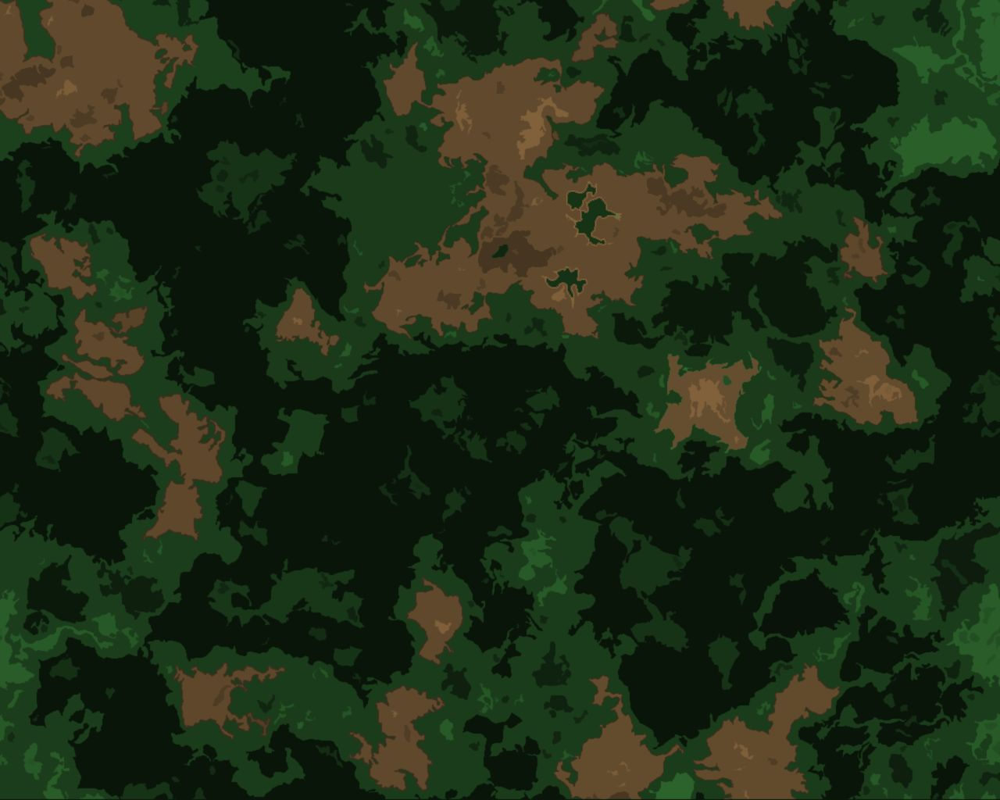
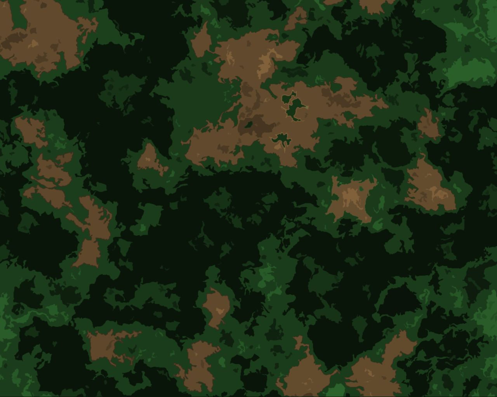

Sample Music Composition
Using the program Magix Music Maker at an internship I was able to create the following music piece. I do not own the sound loops used to create this track, but the composing was done only by me and with no assistance from a third party.
In order for you to be able to view the progress I've made, I included 4 versions of the track. The amount of work invested between each of the 4 versions is not linear in difference to what the numbers might suggest. Each version was obviously a point during the creation process, where was I was at least satisfied with what emerged.
| Working Title | Player | Version |
| Classic Sample Composition | v0.1 | |
| Classic Sample Composition | v0.2* | |
| Classic Sample Composition | v0.3 | |
| Classic Sample Composition | v0.4 |
If the player doesn't work: HERE is a .zip of all 4 files.
Excel Showcase
I developed this excel sheet while solving a task in the module Technische Grundladen der Informatik at the University of Bremen. A phrase was given which had some missing digits. However because it was written on a level 5 raid protected harddrive, there is a possibility to restore the lost data by using XOR operations to calculate them again.
I decided excel was the way to go. I used the following excel functions in order to restore the missing digits:
- hexindez()
Converts a hex to a decimal - zeichen()
Converts a decimal number to a ascii sign - hexinbin()
Converts a hex to a binary - binindez()
Converts a binary to a decimal
Click right to view the → Excel Tables
The XOR links of the digit groups have been calculated by following excel formula:
=WENN(REST(TEIL(M4;1;1)+TEIL(A4;1;1)+TEIL(E4;1;1);2)=1;1;0)&...
Eight of these terms, each connected to the next one with an &, now correctly give out the 8 digit bit string, which I wanted to restore. After that the bit strings have been morphed back to ascii signs in order to reveal the wanted sentence. Please note, that there are intended typos contained in the message to ensure, that the students don't just look up the sentence on the internet.
Solved: If you tHink You’re smarter than the badblocks program, you Almost certaiNly aren’T.
About
My name is Luca Raimondo, I was born on the 4th of march in 1987 in the beautiful city of Hamburg. I'm currently studying Digital Media at the University of Bremen. Most of the work is already done. The upcoming tasks of the next semesters also seem to be very interesting. I'm excited and looking forward to finishing my studies in the next 2 years.
My interests focus around computer graphics, covering both: using programs to create or modifiy art and the supprting algebraic representations in the GPU/CPU. I also enjoy some good mathematical problems every now and then. Maybe garnished with the greatest love of my major: LaTeX.
I am literally able to sit down for another 3 hours after just having finished the weekly exercise sheet in order to only have the graphics in my PDF really crisp. Most of the time I even don't consider this to be work. This is fun!
 
